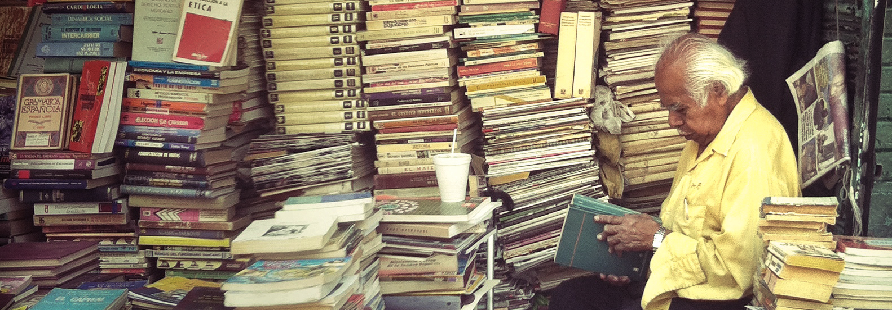

New Readers
An inquiry into internet users from middle and low income countries.
Project Overview
The Wikimedia movement seeks to increase readership in Asia, Africa, and Latin America—places where new internet users are emerging but may not know or use Wikimedia sites. The New Readers research examines internet users and their context, assesses product development needs geared towards increasing engagement with Wikipedia for people in these contexts, and enhances our understanding of internet usage outside of high income countries.
Problem Statement
The next billion people are coming online worldwide in middle and low income countries. Mobile Internet penetration will grow from 28% to 45% in low and middle income countries (LMIC) from 2014 to 2020 (GSM Report), which is an increase of 700 million potential readers and editors (1.55 billion now; 2.25 billion in 2020) compared to 600 million total today in the high income countries (HIC). Wikipedia readership ratios are inverted compared to population; 78% of Wikipedia page views are from HIC and this number has been flat for more than a year.
WMF has previously focused on developing the Wikimedia movement in LMIC mainly by examining access (through Wikipedia Zero) and editing (through grant making). We have a lot to learn about the different constraints and behaviors for people outside of the HIC, particularly when it comes to product development.
Through a better understanding of users in the LMIC, we will improve the interfaces of Wikimedia projects to help readers access and engage more deeply with our content.
Research Goals
Research Questions
Approach
Our method is contextual inquiry through formatted ethnographic interviews. We conducted 16 interviews, in context, of Wikipedia users and non-users to learn more about their relationship to knowledge and learning, their technology ecosystems and their lives in general to inform how Wikimedia is and isn’t meeting needs. Interviews were recorded, conducted in the home or a familiar neutral location, and lasted 90 minutes. Participants range in age from 15-40; have varying degrees of access to the internet (limited, moderate and unlimited); located in urban and rural locations; men and women; employed, students, and unemployed.
Outcomes & Findings
Information Seeking
1. People seek news and actionable information first, and context second.
2. There is no one-stop shop for news and information.
3. Only in specific scenarios do people scrutinize the credibility of an international information source.
4. People don’t need to trust an information source to find it useful.
5. Successful information systems meet users where they are today, while also evolving with their changing information habits.
6. Visual content and design helps attract and win over users.
Accessing the Internet
7. Constant, individual internet access is not the norm for all.
8. Mobile dominates for getting online, and Android is the platform of choice.
9. In Nigeria, internet access has been prohibitively expensive. Consumers are savvy, price-sensitive shoppers with low brand loyalty.
10. In India, internet access is more affordable, but cost remains a barrier to widespread internet penetration.
Understanding the internet
11. Mental models around the internet can be confused.
12. People are learning how to use the internet from others, both loved ones and professional intermediaries.
Using the internet
13. People are using the internet in English, without expecting otherwise.
14. People are precious about data usage, and low-bandwidth browsers dominate.
15. Mobile apps have exploded in popularity, with instant messaging and social media at the top.
16. Students and educators often have conflicting views on if and how the internet can support formal education.
Getting Information Online
17. People trust online search (Google in particular) to get them what they need.
18. Search habits are largely basic. Users surface what they need through trial-and-error queries, or by looking for quality indicators in the results.
19. In an era of search-led, task-oriented browsing, there is little loyalty to specific web properties — unless they relate to personal passions.
20. People are increasingly getting information online, then consuming or sharing it offline.20. People are increasingly getting information online, then consuming or sharing it offline.
Wikipedia Awareness
21. As a brand, Wikipedia is not widely recognized or understood. Some people are Wikipedia readers without realizing it.
22. People confuse Wikipedia with a search engine or social media platform. This can create unrealistic expectations of its functionality.
23. Wikipedia readers are generally task-oriented, not exploration- oriented. Wikipedia is seen as a utilitarian starting point that sometimes surfaces through search, and not a destination in itself.
24. Wikipedia’s content model can arouse suspicion. Despite this, there was no observed relationship between trust in and reading of Wikipedia.